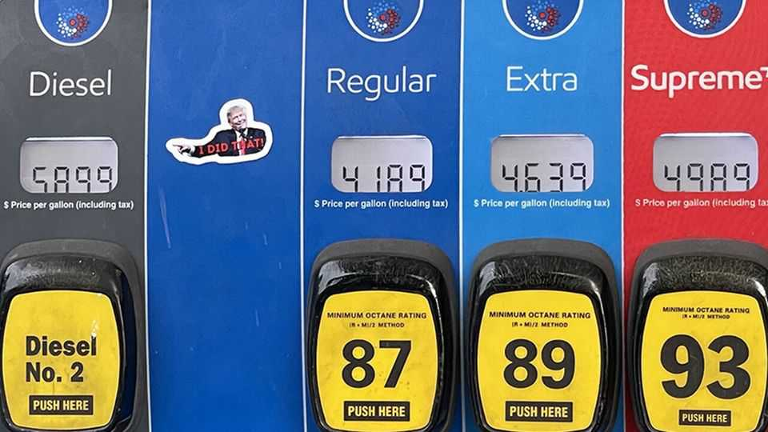

Donald Trump turns to Vladimir Putin for relief at the pump
But Russian diesel is unlikely to solve the president’s political problems

Oct 15th 2026
“THE EUROPEANS are still sending money to Russia for energy,” complained Scott Bessent, America’s treasury secretary, in January. “It is so absurd. They are financing the war against themselves.” So too, now, is America. On October 9th Donald Trump—who just weeks ago signed into law a bill requiring tariffs on big importers of Russian oil and gas—said that Vladimir Putin, Russia’s president, would sell millions of tonnes of diesel fuel to America. The deal has sparked a minor rebellion among Mr Trump’s supporters. Worse, it is unlikely to achieve his goals.
Mr Trump’s motivations are mixed. His advisers portray the deal as an effort to pave the way for peace talks; the president also announced a Russia-Ukraine energy ceasefire, which was denied by Ukraine and ignored by Russia. European diplomats suspect that some of the president’s aides are desperate to re-establish economic ties with Russia. But a more pressing concern for Mr Trump is rising prices at home. Annual inflation hit 3.7% in September, driven by higher energy costs.
America is a diesel exporter, but a global shortage has pushed up prices everywhere. The main cause is the war in Iran and the disruption of tanker traffic through the Strait of Hormuz. Ukraine’s strikes on Russian refineries have made matters worse. Diesel costs $6.29 per gallon in America, up 72% from a year earlier. That could have political consequences: of seven “toss-up” Senate races in November’s midterm elections, four are in states that use more diesel than average, according to The Economist’s calculations.
Mr Trump seems to hope that more Russian diesel exports will pull down prices before the midterms. But he is likely to be disappointed. Russia is struggling with diesel shortages of its own. The quantity pledged in the deal is tiny relative to global consumption. Moreover, Russia would almost certainly have exported that diesel anyway. And even if Ukraine stops striking Russian refineries, any increase in production is likely to come after America votes.
Opponents of the president accuse him of stretching, if not breaking, the law, citing the Ending Importation of Russian Oil Act of 2022. The clear intent of the law is that it should prohibit these imports, says Peter Harrell of Georgetown Law School. The act was implemented through an executive order whose wording might give Mr Trump a tenuous justification for issuing temporary licences. Democrats tried to close that loophole in April but were rebuffed by Republicans. Still, the legal uncertainty may cause firms to stay away. “What company is going to risk liability for importing Russian oil under these circumstances?” asks Dan Fried, who once led America’s sanctions policy against Russia.
The political blowback has been swift. On October 13th a dozen senators, including six Republicans, signed a letter to Mr Trump describing the deal as “a gift to our adversary and a betrayal of our allies”. Among them were the independent-minded Susan Collins and the outgoing Thom Tillis, who has threatened to use a military spending bill as leverage to stop the deal. But criticism has also come from Republicans once reluctant to take on Mr Trump, such as Mike Rogers, a Senate candidate in Michigan, and Dan Sullivan, an Alaska senator facing a tough re-election fight. Privately, Republican aides are scathing about what they see as needless folly. “I expect”, says one, “it will go away quietly.” ■
Stay on top of American politics with The US in brief, our daily newsletter with fast analysis of the most important political news, and Checks and Balance, a weekly note that examines the state of American democracy and the issues that matter to voters.